Part A — Manual Stitching
This section documents manual correspondence selection and homography-based mosaicing.
Image registration, projective warping, resampling, and compositing to create image mosaics (panorama).
This project explores image mosaicing by implementing homography recovery, projective warping, and image blending from scratch. I shot photographs with projective transformations, computed homographies using point correspondences, implemented two interpolation methods (nearest neighbor and bilinear), and create mosaics using Laplacian blending.
This project is spearated into two parts: Part A uses manual selection of point correspondences, while Part B uses Harris corner detection following the approach described in Multi-Image Matching using Multi-Scale Oriented Patches.
Tip: Click any image to open a lightbox gallery.
This section documents manual correspondence selection and homography-based mosaicing.
Per the project description, I shot 3 images with projective transformations that are interiors of buildings (for easy corner selection). The images are shot with a phone, at a timeframe that's less than 5 seconds apart. The overlap percentage is around 70% for each image.
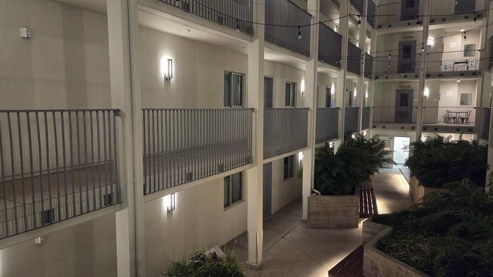
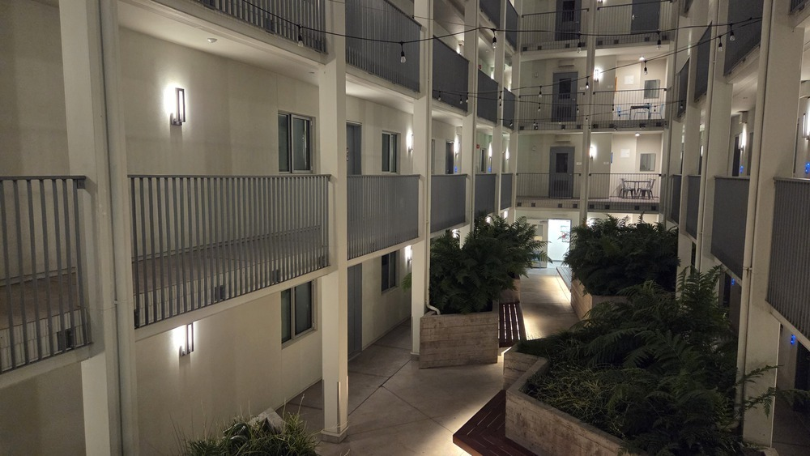
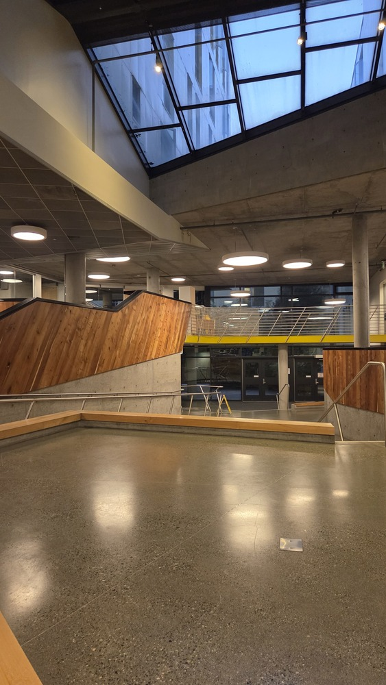
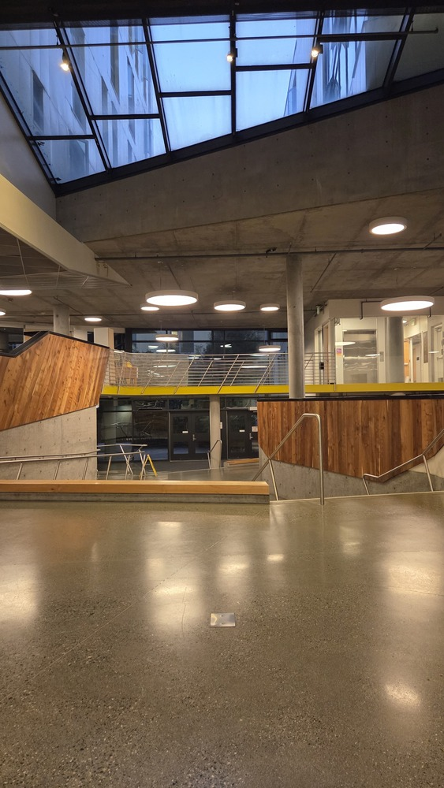
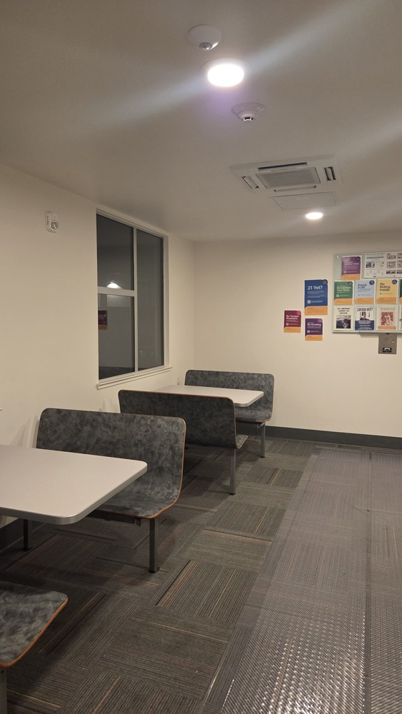
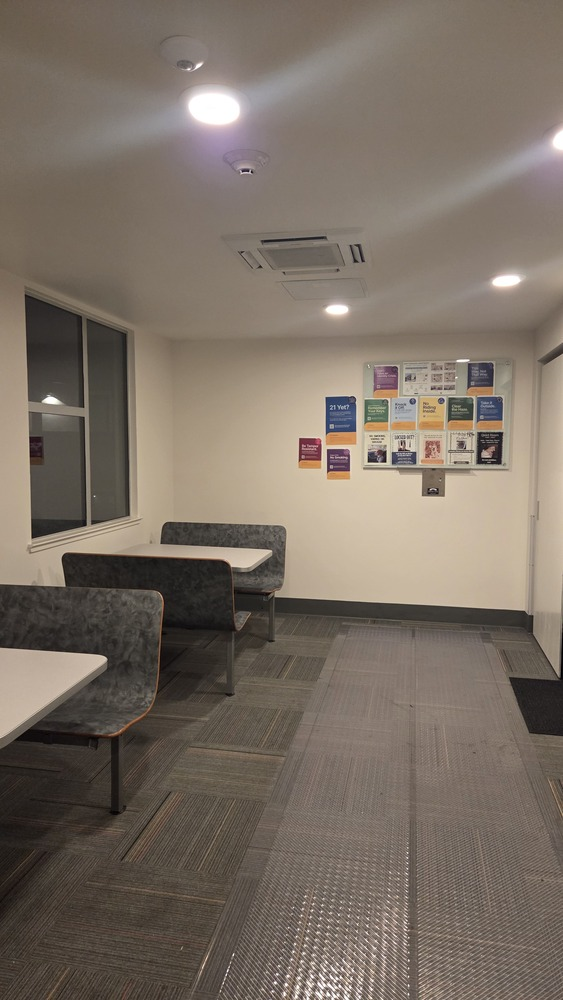
For each pair of images, I fix the center of project (COP) and rotate my camera while capturing the images. This ensures that the COP is the same for each pair of images.
I selected around 20-30 point correspondences between the image pairs using the link provided in the project description. The correspondences were chosen to be well-distributed across the overlapping region so that the homography is calculated with less error. The manual selection of point correspondences is shown below.
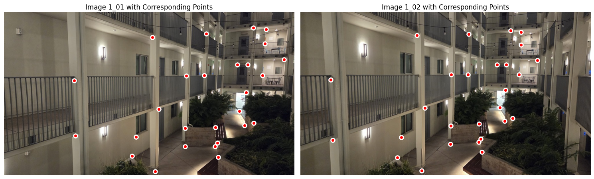
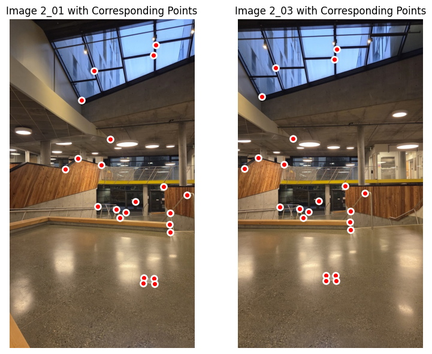
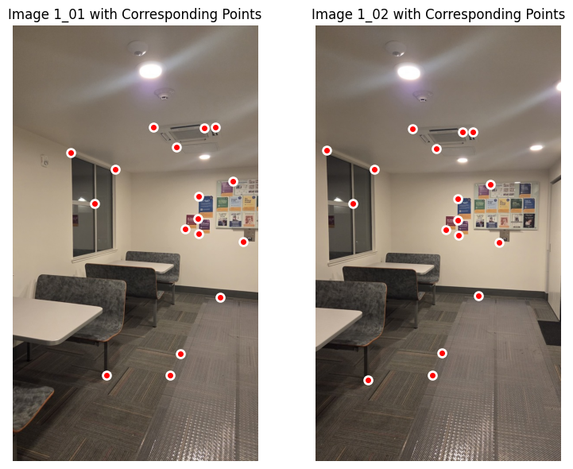
I implemented the computeH(im1_pts, im2_pts) function to solve for the 3×3 homography matrix H
using the system of equations Ah = b, where h contains the 8 unknown entries of H.
def computeH(im1_pts, im2_pts):
# 1) Inputs: im1_pts = [(x1, y1), ...], im2_pts = [(u, v), ...]
# 2) Build A by adding two rows per correspondence:
# [x1, y1, 1, 0, 0, 0, -u*x1, -u*y1]
# [0, 0, 0, x1, y1, 1, -v*x1, -v*y1]
# 3) Build b by stacking targets: b = [u1, v1, u2, v2, ..., uN, vN]^T
# 4) Solve least squares h = argmin ||A h - b|| (8 unknowns)
# 5) Append scale term: h9 = 1 → h = [h1..h8, 1]
# 6) Reshape to 3x3: H ← reshape(h)
# 7) Return H| λu |
| λv |
| λ |
| h₁ | h₂ | h₃ |
| h₄ | h₅ | h₆ |
| h₇ | h₈ | 1 |
| x |
| y |
| 1 |
Since we have 8 unknown entries in the homography matrix, we need at least 4 pairs of correspondences to solve for the homography matrix. For each pair of correspondences, we can write the following system of equations:
For each point correspondence (x, y) → (u, v):
u = (h₁x + h₂y + h₃) / (h₇x + h₈y + 1)
v = (h₄x + h₅y + h₆) / (h₇x + h₈y + 1)
which means
h₁x + h₂y + h₃ − u·h₇x − u·h₈y = u
h₄x + h₅y + h₆ − v·h₇x − v·h₈y = v
and in matrix form
| x | y | 1 | 0 | 0 | 0 | −u·x | −u·y |
| 0 | 0 | 0 | x | y | 1 | −v·x | −v·y |
| h₁ |
| h₂ |
| h₃ |
| h₄ |
| h₅ |
| h₆ |
| h₇ |
| h₈ |
| u |
| v |
With the minimum 4 correspondences (i = 1…4), the stacked linear system A h = b:
| x₁ | y₁ | 1 | 0 | 0 | 0 | −u₁·x₁ | −u₁·y₁ |
| 0 | 0 | 0 | x₁ | y₁ | 1 | −v₁·x₁ | −v₁·y₁ |
| x₂ | y₂ | 1 | 0 | 0 | 0 | −u₂·x₂ | −u₂·y₂ |
| 0 | 0 | 0 | x₂ | y₂ | 1 | −v₂·x₂ | −v₂·y₂ |
| x₃ | y₃ | 1 | 0 | 0 | 0 | −u₃·x₃ | −u₃·y₃ |
| 0 | 0 | 0 | x₃ | y₃ | 1 | −v₃·x₃ | −v₃·y₃ |
| x₄ | y₄ | 1 | 0 | 0 | 0 | −u₄·x₄ | −u₄·y₄ |
| 0 | 0 | 0 | x₄ | y₄ | 1 | −v₄·x₄ | −v₄·y₄ |
| h₁ |
| h₂ |
| h₃ |
| h₄ |
| h₅ |
| h₆ |
| h₇ |
| h₈ |
| u₁ |
| v₁ |
| u₂ |
| v₂ |
| u₃ |
| v₃ |
| u₄ |
| v₄ |
I selected 20+ pairs of correspondences for each image pair, and used least squares to solve for the homography matrix. The reason for not selecting only 4 pairs of correspondences is because I (human) do not have perfect precision in selecting the points, and any errors in the point selection will be amplified in the homography matrix. Having more pairs of correspondences and using least squares will help to reduce the error in the homography matrix.
Set 1 Homography:
H₁ =
[ 7.53138219e-01 -1.42825702e-02 1.60066520e+02 ]
[ -5.56760054e-02 8.90119312e-01 2.84958573e+01 ]
[ -2.45690598e-04 -7.30863144e-07 1.00000000e+00 ]Set 2 Homography:
H₂ =
[ 8.23954630e-01 -2.45916671e-03 1.54378398e+02 ]
[ -1.57643081e-01 9.36131556e-01 3.15696705e+01 ]
[ -3.30162836e-04 3.55366679e-06 1.00000000e+00 ]Set 3 Homography:
H₃ =
[ 8.70156907e-01 -1.29963136e-02 1.15671728e+02 ]
[ -1.08865505e-01 9.43697138e-01 2.26303461e+01 ]
[ -2.33177965e-04 -3.45300709e-06 1.00000000e+00 ]I implemented two warping functions using inverse warping to avoid holes in the output image:
def warpImageNearestNeighbor(im, H):
# 1) Invert the homography: map output -> input
# 2) Get input image size; create an output image of same size
# 3) For each output pixel (i, j):
# a) Compute source homogeneous coord p = H_inv * [j, i, 1]^T
# b) Dehomogenize: (x, y) = (p_x / p_w, p_y / p_w)
# c) Round (x, y) to nearest integer
# d) If inside input bounds, assign output[i, j] = input[round(y), round(x)]
# 4) Return output
def warpImageBilinear(im, H, output_size=None):
# 1) Invert the homography: map output -> input
# 2) Determine output size (given or same as input)
# 3) Create an empty floating-point output image
# 4) For each output pixel (i, j):
# a) Compute source homogeneous coord p = H_inv * [j, i, 1]^T
# b) Dehomogenize to (x, y) in input space (float)
# c) Find neighbors: x0=floor(x), x1=ceil(x), y0=floor(y), y1=ceil(y)
# d) If any neighbor is out of bounds, continue
# e) Compute bilinear weights using dx = x - x0, dy = y - y0
# f) value = I[y0,x0]*(1-dx)*(1-dy) + I[y0,x1]*dx*(1-dy)
# + I[y1,x0]*(1-dx)*dy + I[y1,x1]*dx*dy
# g) Assign output[i, j] = value
# 5) Return outputThe nearest neighbor interpolation is faster than the bilinear interpolation (for the three images, the nearest neighbor interpolation took around 22 seconds, while the bilinear interpolation took around 52 seconds), but the bilinear interpolation is more accurate and smoother. One can clearly see that with the nearest neighbor interpolation method, the shadows are chunky (not smooth), while for the bilinear interpolation, the shadows are smooth.
Here are the results for applying homograph-based warping to recitfy images. The four corners are selected from the image, and mapped to a rectangle (I estimated the corners of the mapping because the images are not perfectly squared, and the ratio of the edges are not 1:1).
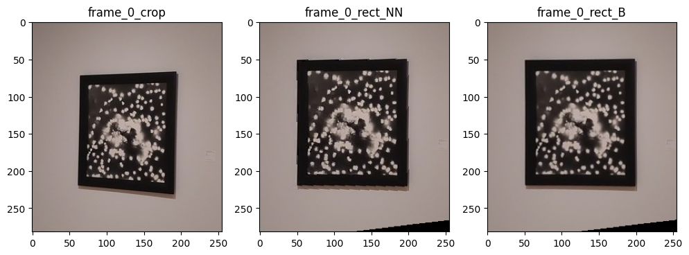
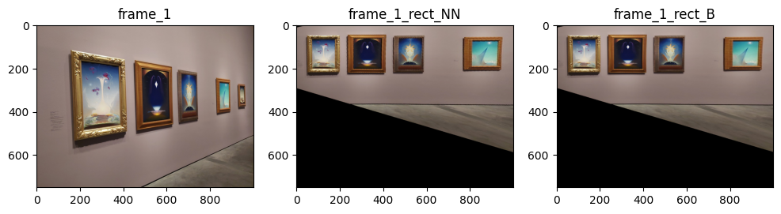
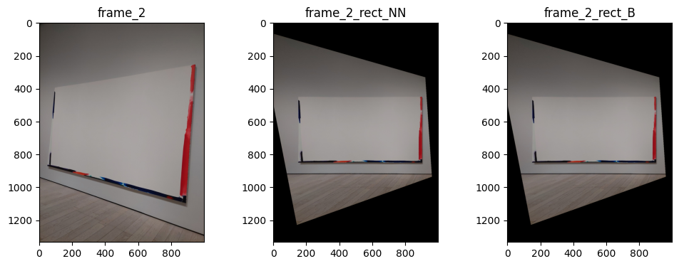
With all the methods implemented, I can now create a mosaic. From Project 2, I implemented a Laplacian stack blending method. I reused the code here and blend the images together after the warping.
To create the mosaic, I first shot two images with projective transformations, and then used the homography matrix to warp the images. The interpolation method I used is the bilinear interpolation. The canvas for the images are "extended" (appended with a bunch of black pixels surrounding the original image) so that the images can be stitched together. Then, I blended the images together using the Laplacian stack blending method, adjusting the layers so the edges are not visible.
The blending results are smooth, and the edges are not visible. The Laplacian blending method is able to blend the images together by taking the high frequency and low frequency of the images, and blending them together.
Here are the final results °˖✧◝(⁰▿⁰)◜✧˖°
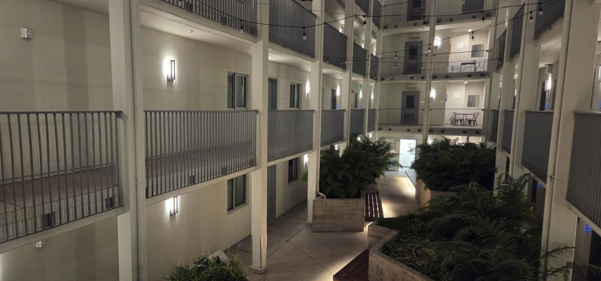
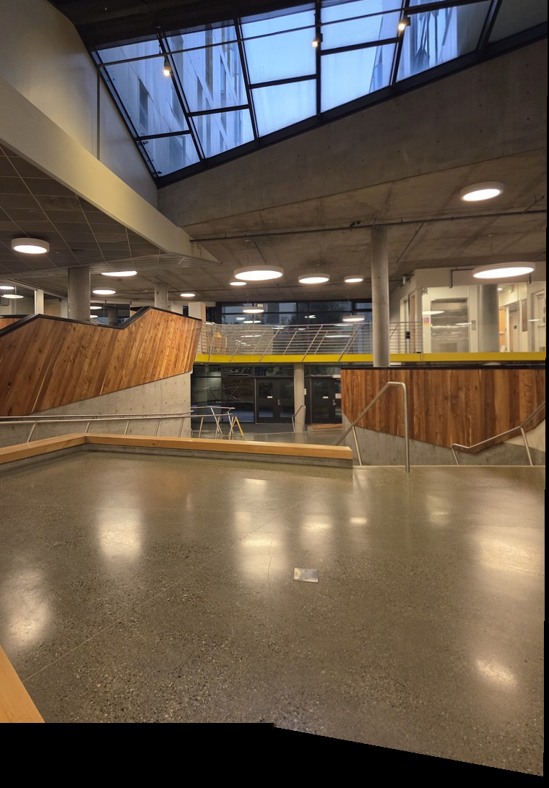
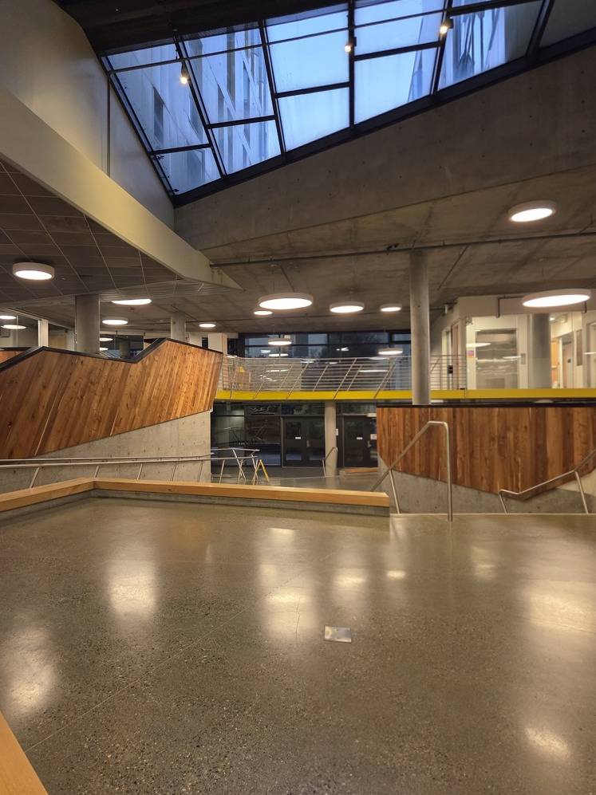
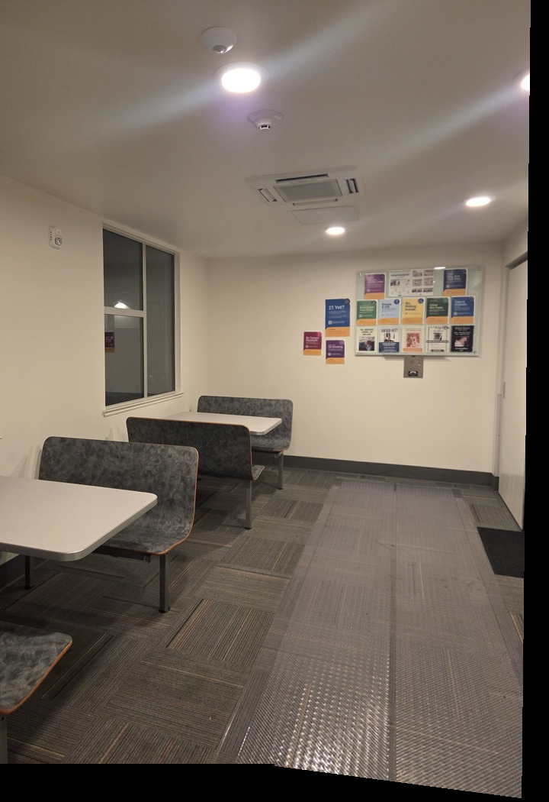
The goal of this part is to automatically stitch images into mosaics by detecting corners (features), finding the descriptors, matching the descriptors across images, estimating homographies with RANSAC, and combining the images into a mosaic using Laplacian blending. The pipeline follows Brown et al., "Multi-Image Matching using Multi-Scale Oriented Patches" (with simplifications and assumptions).
We use Harris for corner detection. The intuition of Harris's algorithm is using the fact that the change in both x, y value is big at a corner (big derivative). Hence, if we find the location that has big change in x and y, we are probably at a corner. In this project, we use the simple assumptions that the image is not rotated, and we do not implement multi-scale.
After having a collection of points from the corner detection algorithm, I use ANMS to have a relatively equal distribution of corners in the image. In this way, the corners are well spreaded out, and makes computing H more accurate (because there is representations for the entire picture, and not just at the locations where there are strong signals for corners).
The way the ANMS work is that for each corner point, we find the minimum distance to any other corner point that has a high corner response (intensity) by some constant factor (c_robust, which is 0.9 in the paper). We then sort the corners by the mininum radius (descending order, so the biggest radius go first), and pick the top target_num coordinates. This ensures that we select corners that are both strong and well-distributed across the image.
def find_ANMS(intensity, coords, c_robust=0.9, target_num=500):
# 1) Inputs: intensity = all intensity calculated from Haris, coords = corner coordinates
# 2) Initialize: n = number of corners, vals = intensity values at corner locations
# 3) Initialize: r = array of minimum distances (initially infinity)
# 4) For each corner i:
# a) Find all corners j where vals[i] < vals[j] * c_robust
# b) If any stronger corners exist:
# - Compute squared distances between the points (i to any j)
# - Find minimum distance: r[i] = mininum radius (squared distance)
# 5) Select top target_num corners with largest r values
# 6) Return selected corner coordinatesThe Harris corner detector identifies points with high intensity gradients in both x and y directions. After applying ANMS, we obtain a well-distributed set of strong corners suitable for feature matching.
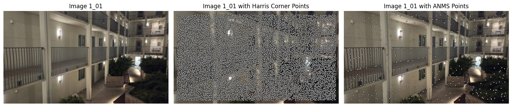
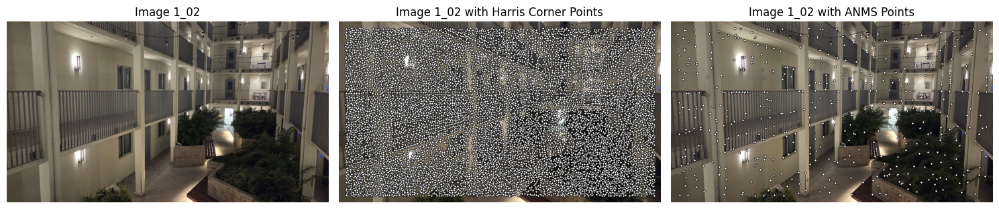
After getting a collection of well-spreaded corners, the next thing to do is to "describe" the corners. Using method mentioned in Brown et al.'s work, I extracted a 40x40 patch surrounding the corner pixel, downsample it, and normalize the value. The normalization ensures that the pixel intensity does not effect the detection of feature matching in the next step.
def get_descriptor(img, coords, radius=20, size=8):
# 1) Inputs: img = blurred input image,
# coords = corner coordinates,
# radius = patch radius,
# size = output descriptor radius
# 2) Initialize: descriptors = empty array to store feature descriptors
# 3) For each corner coordinate i:
# a) Extract patch: patch = get the radius x radius square patch (window) around the corner
# b) Downsample: sample = downsample the patch to size x size
# c) Normalize: norm = z score noramlize the intensities # Bias/gain normalization
# d) Store: descriptors[i] = norm
# 4) Return descriptors arrayThe following image shows examples of extracted feature descriptors from different corners in the image. Each descriptor is an 8×8 normalized patch that captures the local appearance around the corner point.
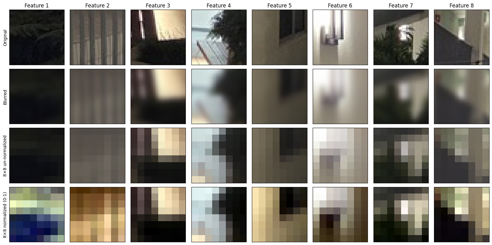
After getting the descriptors from B.2, we now need to match them across the two different images. Here, we used Lowe's trick, where for every 8x8 patch in the first image, we find the 2 closest 8x8 patches on the second image (kNN with k=2, and metric being Euclidean). Then, we compare the ratio of the 1-NN and 2-NN. If the ratio is smaller than some threshold (0.5 in this case), we say that the patch in image 1 matches with the 1-NN. If the ratio is bigger than the threshold, we reject the pairing (and that corner gets removed from the list of corners).
The intuition behind Lowe's trick is that if there's one match that's really, really good, the ratio between 1-NN/2-NN would be really small (since 1-NN would be small, and 2-NN would be big). If there are two matches that are equally good, it means neither of them are actually good, and the ratio would be closed to 1.
The following images show the feature matching results using Lowe's ratio test. The first image shows all the matches, while the second shows the matches with rejected points (white).
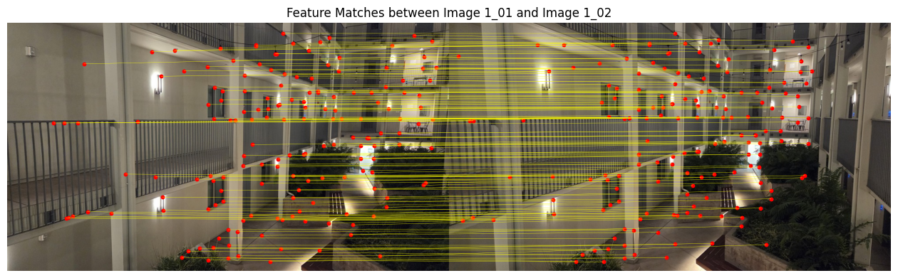
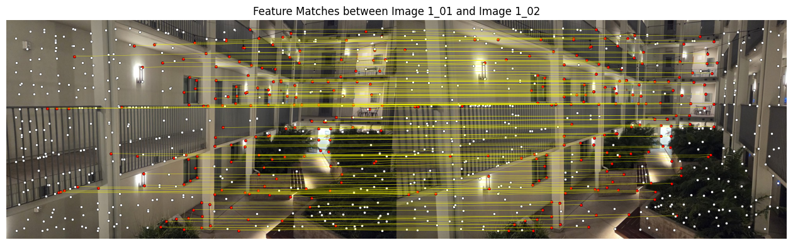
The following images show how different threshold values affect the quantity of feature matches. Lower thresholds result in fewer but more reliable matches, while higher thresholds include more matches but with potentially lower quality. (Click image to enlarge.)
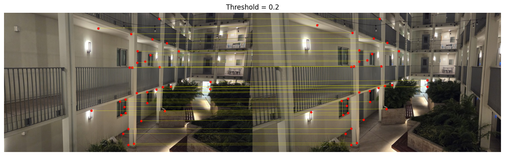
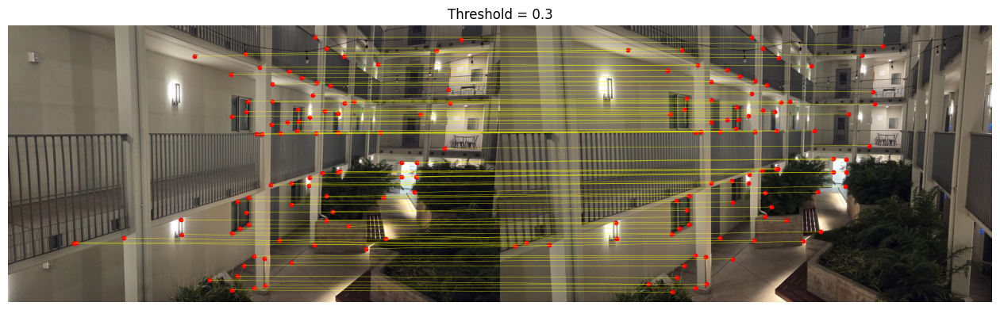
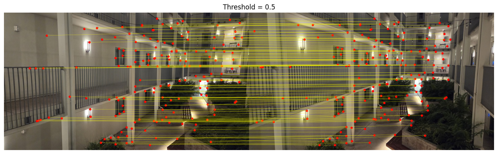
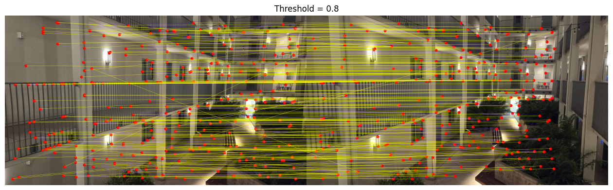
The idea of RANSAC is with n iterations, select 4 pairs of points at random and compute the homography matrix H, and based on that H, calculate how many inliers existed (inlier is defined as when applying H to coordinates [of one image], the resulting coordinate is within eplison of the actual coordinate [of the other image]). The H with most inliers are kept. After the n iterations, we use all the inliers associated with the best H to recompute H_final, and that is final homography matrix H.
def RANSAC(matches, n, eplison):
# 1) Repeat n times:
# a) Pick 4 random pairs
# b) Compute H from these 4 pairs
# c) Count how many matches H explains well (inliers)
# i) Keep the longest list of inliers
# ii) Keep the H with most inliers
# 2) Recompute H using the longest list of inliers inliers
# 3) Return final HAfter computing H, we have all the information we needed. We can proceed as what we did in Part A.4. We warp the images using the homography matrix H using bilinear interpolation, and blend the images using Laplacian blending. The result is shown below.
The following images compare manual correspondence selection (Part A) with automatic feature matching (Part B). Because I maunally selected 20+ points in Part A, the results between Part A (manual) and Part B (automatic) is not as obvious.
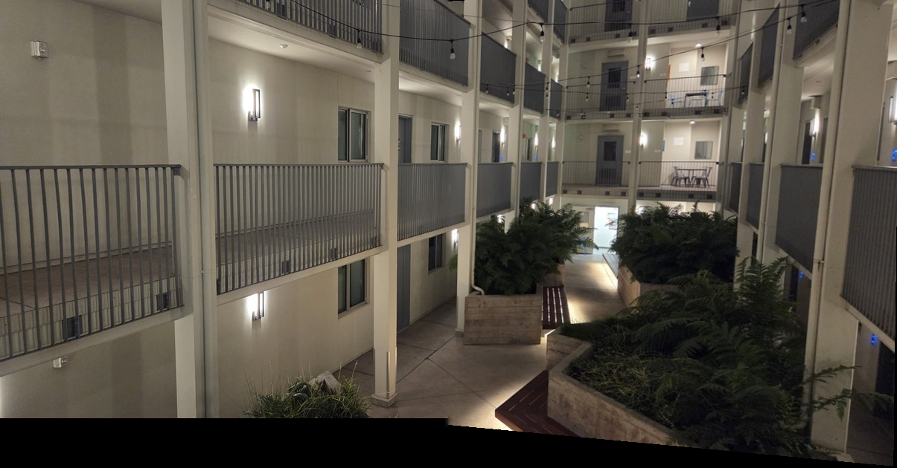
The following gallery shows all mosaic results comparing manual correspondence selection (Part A) with automatic feature matching (Part B) for all three image sets. (The images slightly moves from Part A to Part B is due to manual cropping of the black border.)
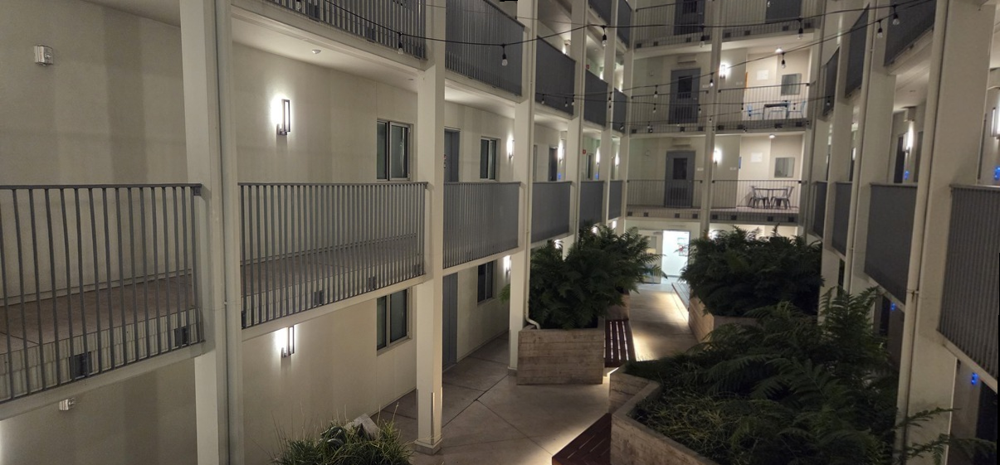
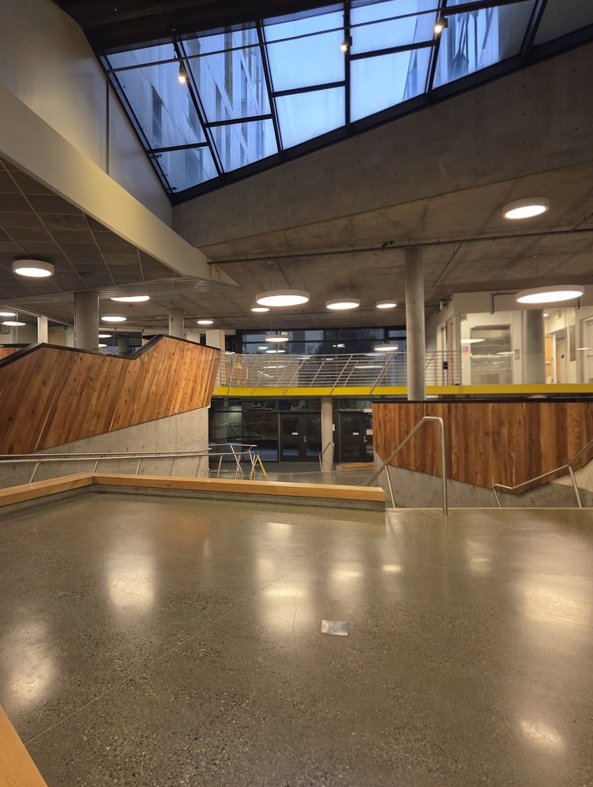
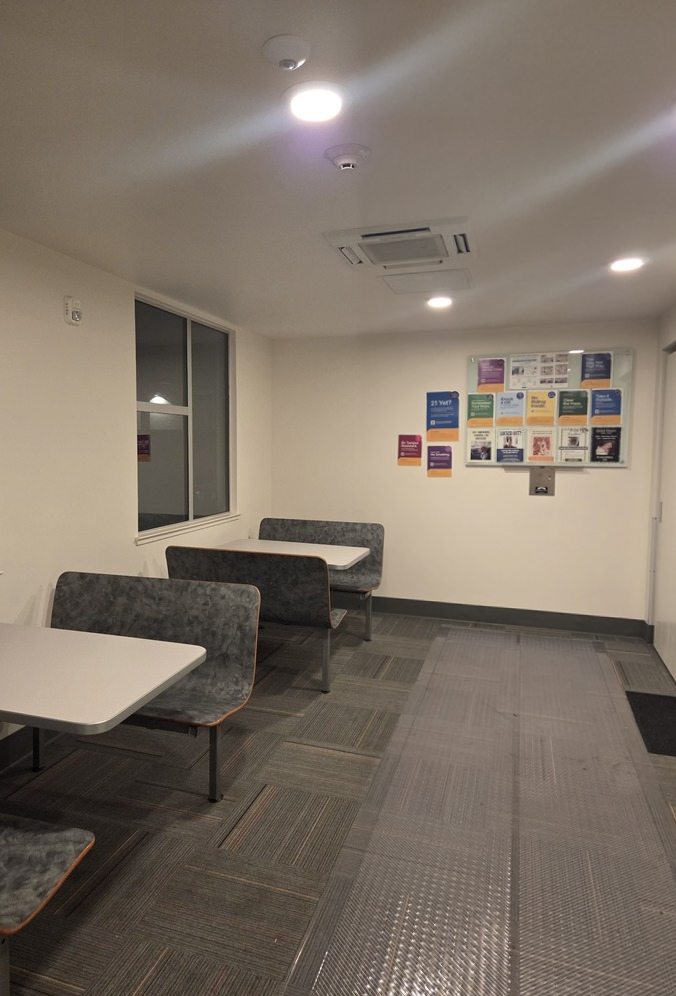